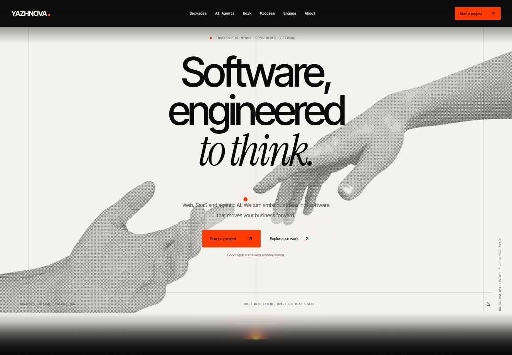

Eight chapters.
Motion, on mobile.
Actual page heroes on desktop, a 390px iPhone-sized viewport and a 412px Android-sized viewport. The mobile captures use touch, no reduced motion and live source canvases.
Read the full report ↗ · FPS and canvas observations